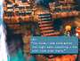

|
One
of the big secrets of the game is that Princess Garnet's true name
is engraved on the Eidolon Wall at Madain Sari. There is a very
complicated way to reveal the truth at the beginning of Disc 4.
|  |
First,
form a party with Dagger and visit Lani who is standing on Eiko's
back porch. Upon arriving Lani will run away. Exit the village
and return with anyone except Dagger or Amarant and talk to
Lani twice. Exit the village and return with anyone except Dagger
or Amarant and talk to Lani twice. Read the message and go to
the Eidolon Wall. Walk clockwise from the entrance (heading
to the right) until you return to the entrance. Move just past
the "!" until you hear a chime. Then walk counterclockwise
back to the entrance, just past the "!" again. Repeat
this 9 times, going back and forth. Make sure you hear a chime
each time. On the ninth round, your HP/MP will be recovered
and all status abnormalities removed. |
| Now
read the paintings. You can read them in any order, as long
as you read them all. A whole slew of extra messages appear
this time. At the end, return to the Ifrit drawing and look
for an extra message, revealing Dagger's true name. |
|
|
){kind=link}
){kind=link}